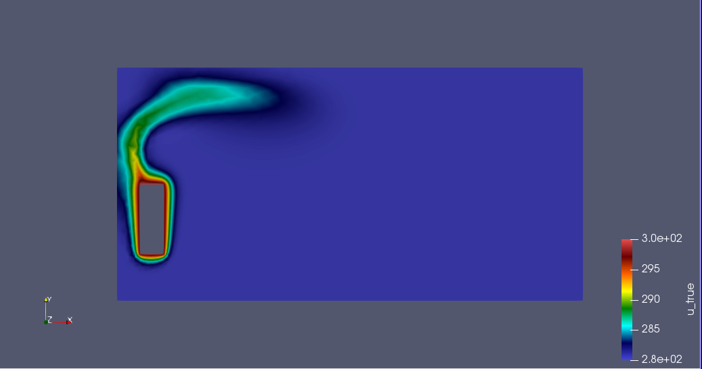

First Case Study for PBDW
\(\quad\)In these example, we consider a simple 2D case study in heat transfert modeling with our laplacian model best knowledge \(\mathcal{P}^{bk}: \Omega \times \mathcal{D}^{bk} \rightarrow \mathbb{R} \).
We will consider the solution \(u \in \mathcal{X}\), a Hilbert space s.t \(H^1_0(\Omega) \in \mathcal{X} \in H^1(\Omega)\). We want to compute the best knowlege state \(u^{bk}(\textbf{p}) \in \mathcal{X}\) using methode PBDW.
| … [Why chose this model?] Un modèle simple permet de comprendre la méthodologie et pratiquer l’implémentation de PBDW. |
1. Problem design
\(\quad\)We consider the two-dimensional domain of dimensions \(H \times L\) and chose randomly location of a sensor seen in Figure 1.
Here the boundary \(\Gamma_{D}\) is Dirichlet boundary condition which can be interpreted as a source of heat \(Q\). And \(\Gamma_R\) is Robin boundary condition which presents convective exchange outside between wall and air outside.
1.1. Parameters
We takes the source term \(Q\) and the temparature outdoor \(T_{ext}\) with the heat transfer coefficient \(h\) as varying parameters \(\textbf{p} = (Q, T_{ext}, h) \in \mathcal{D}^{bk} \subset \mathbb{R}^{3}\), where \(\mathcal{D}\) here presents the parameter space.
| … [why chose these parameters ?] |
| …[What is the scale for each parameter ?] |
1.2. Sensors
We also assume that we have a second source of information in the form of field observations.
With \(M\) experimental observations, we construct our data \(y^{obs}_m, 1 \leq m \leq M\)
where \(u^{true}(\textbf{p})\) represents the true physical state of the system and \(l_m\) are linear measurement functionals for the sensors.
| Here \(M = 1\) |
1.3. Heat transfert model
For each parameter \(\textbf{p}\), the steadystate temperature distribution within \(\Omega\), \(u^{bk}(\textbf{p}) \in \mathcal{X}\), is governed by the elliptic partial differential equation (1)
where \(u\) is the temperature distributed within the domain \(\Omega\).
Boundary Condition:
-
Dirichlet condition
-
Robin condition
1.3.1. Finite Element method
In this state, we want to creat the background space \(\mathcal{Z}^{N}\), the background space base on \(N\) solutions of Finite Element method .
For each parameter \(\textbf{p} \in \mathcal{D}\), the associated variational problem is to find \(u(\textbf{p}) \in \mathcal{X}\) such that for any \(v \in \mathcal{V}\) appropriate test space
We define here \(\mathcal{X}_h\) a discrete approximation space of dimension \(\mathcal{N}_h\) for use in method of finite elements.
We denote \(\mathcal{M}_h^{bk} = \{ u_h^{bk}(\textbf{p}) \in \mathcal{X}_h| \textbf{p} \in \mathcal{D}^{bk} \}\), the manifold of all solutions can be approximated by a finite set off well-chosen FE solutions of parametrized PDE.
Note that \(S_N = \{\textbf{p}_1, \textbf{p}_2, \cdots, \textbf{p}_N \} \in \mathcal{D}^N\) is a set of parameters. Therefore, we can generate the reduced-basis space as \(\mathcal{M}_h^{bk} = span \{ u_h^{bk}(\textbf{p}_1), \cdots , u_h^{bk}(\textbf{p}_N)\} = span \{ u_h^{bk}(\textbf{p}_i), \textbf{p}_i \in S_N \}\)
Thank to RB approximation space, we can replace the approximation space of FE generated by \(\mathcal{N}_h\) simple basis functions with a RB space generated by \(N << \mathcal{N}_h\) particular solution for \(\mathcal{P}^{bk}\)
We want to compute the inexpensive approximation \(u^{bk}_N(\textbf{p})\) for any \(\textbf{p}\) by seeking a linear combination of the particular solutions
In what follows, we perform a Gram-Schnidt orthonormalization and introduce the Background space \(\mathcal{Z}_N = span\{\zeta_i\}^{N}_{i=1} \subset \mathcal{X}\)
Let \(\{ \varphi_h^1, \varphi_h^2, ..., \varphi_h^N \}\) be the basis functions of \(\mathcal{X}_h\). The solution of the variational problem (2) is equivalent to
So in order to compute \(u^{bk}_h(\textbf{p}_i\), we solve (3) for each \(\textbf{p}_i \in S_N\). Then we apply process of Gram-Schnidt to build \(\mathcal{Z}_N\).
1.4. Heat & Fluid model
We will consider CFD modeling for the 'true' model which can provide informations to the capteurs. Those informations are considered as the experimental observations of physical state. Otherwise, the fact that this model can simulate the phenomena of natural convection can lead us to a true physical state. Recall that we aim to approche the true physical state by an approximation PBDW, thus, we can use this true state as an exact soultion to validate our approximation.
\(\quad\)The equation (1) is the momentum equation inherited from Newton’s law and (2) is the mass conservation equation for incompressible flows.
Boundary condition:
-
Condition of velocity
On exterior-wall, heater1
We define the vitess of zero fluid on the walls to assume that there is no circulation of flow in boundary.
-
Condition of temperature
-
Condition of Dirichlet
-
On heater1: T= 310 K
By fixing the values in the boundary heater , we assure the temperature for the radiators allong the simulation.
-
Condition de Robin sur exterior-wall
On the walls , we consider a wall composed of several materials (insulation / plaster / concrete) and an exchange with the outside which is at a temperature of 280 K (\(T_{ext} = 280\)).
As a a wall composed of several materials, we have to determine the heat transfer coeffient by the method which is useful to find the heat transfert between simple element such as walls in buidings, within materials. (see [1])
where
x = the wall thickness
k = the thermal conductivity of materials
h = the individual convection heat transfer coefficient for each fluid
Boundary Condition:
-
Dirichlet condition
-
Robin condition
For solving stategy of heatfluid model, you can find the detail here docs.feelpp.org/toolboxes/0.106/heatfluid/theory/
2. Input
| Notation | Description | Value | Unit | Note |
|---|---|---|---|---|
Paramètres |
||||
\(T_{ext}\) |
outside temperature |
280, 290 |
\(K\) |
|
\(T_heater\) |
initial temperature |
300, 310 |
\(K\) |
|
\(h\) |
heat transfer coefficient |
1.0/(0.06+0.01/0.5 + 0.3/0.8 + 0.20/0.032 +0.016/0.313 +0.14) , 0.1 |
\( W.m^{−2}.K^{−1} \) |
|
Air |
||||
\(k\) |
thermal conductivity |
0.03 |
\(W.m^{-3}.K^{-1}\) |
|
\(\rho\) |
mass volumique |
1 |
\( kg/(m^3) \) |
|
\(Cp\) |
thermal capacity |
1004 |
\( J/(kg*K) \) |
|
\(\beta\) |
coefficient of thermal expansion |
0.003660 |
\(K^{-1}\) |
|
3. Numerical experience
3.2. Results of Heat transfert model
With 2 parameter, we obtain 2 solutions of the model best knowledge which are the ingredients to buils the background space \(\mathcal{Z}_N\).
|
|
\(u_h^{bk}(\textbf{p}_1)\) |
\(u_h^{bk}(\textbf{p}_2)\) |


Using Gram-Schnidt orthonormalization, we have an orthonormal basis functions \(\{ \zeta_i \}_{i=1}^{N}\), here \(N=2\)
|
|
\(\zeta_1\) |
\(\zeta_2\) |


Note that the 2 solutions \(u_h^{bk}\) are not much differents. This can be explaned by the choice of parameters which are quite closes. In fact, the parameters can not be so differents to make sure that the simulation make sens. Because we have to guarantee our model of Heat transfert stay close to the true physical state, aka Heat & Fluid model. But it can cause problem of the co-linear vector that harm the proceduce of orthonormalization. We will discuss this problem in the case 3 where \(N = M =3\).
3.3. Results of Heat & Fluid model
We observe that the flow circulate from the bottom to the top. The cooler fluid in bottom is heated, then becomes less dense and rises. The process continues, forming a convection concurrent and tranfers heat energy around the domain.

|
The thermical distribution match with the air flow in all domain. The air movement diffuse the heat. This righteousness can reassure us an true physical state which can provide the information reliable to correct the approximation. In methodology, we use all stationary model, but the using toolboxes heatfluid require somes iteration to convergence. It can be a little bit more expensive for the calcule, mostly in offline step.
3.4. Results of PDBW
We check if the Gram-Schnidt process give a good orthonormal basis \(\mathcal{Z}_N\) by looking at the produit scalaire of each 2 vecteur in the basis.
for (int i = 0; i < ZN_orth.size(); i++)
{
for (int j = 0; j < ZN_orth.size(); j++)
{
double scar = produitscalair(heat, ZN_orth[i], ZN_orth[j]);
if ( Environment::isMasterRank() )
std::cout << "i="<<i<<"; j="<<j<<"; scar=" << scar << "\n";
}
}The result show a good Background spaces with all basis vecteurs orthonormals.
i=0; j=0; scar=1 i=0; j=1; scar=-4.69902e-14 i=1; j=0; scar=-4.69902e-14 i=1; j=1; scar=1
We want to verify if our characteristic function over the ball of radius \(r\) in the sensor function \(\phi_m(x)\) guarantee \(\int_{\Omega} \varphi_m(x) d \Omega = 1\)
double c = integrate(_range=elements( heat->mesh()), _expr= phiExpr).evaluate()(0,0);
std::cout << " Is that c = 1 ? " << c << "\n";Is that c = 1 ? 1.113674e-02
Here we chosed
It’s perhape cause by the fact that the sensor function is less smooth. We will see the effect of this property in stability number in case 2.
|
|
Location of sensor |
\(q_m\) |


Matrix of PBDW \(\mathbb{K}^{PBDW}\)
K = 8.813315e-05 6.045991e-03 -9.232949e-04 6.045991e-03 0.000000e+00 0.000000e+00 -9.232949e-04 0.000000e+00 0.000000e+00
Condition number of \(\mathbb{K}^{PBDW}\) Cond(K) = 1.014514e+00
Solutions of PBDW \(\eta\) and \(z\)
z = -nan -nan eta = -nan
We observe that in the case of \(M < N\), method of PBDW didn’t work.
| For a workable methode PBDW, it’s must have \(N \leq M\) |